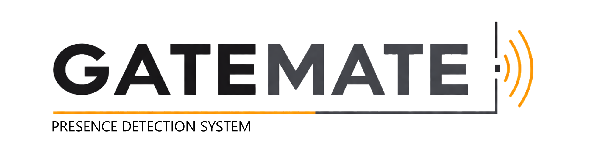
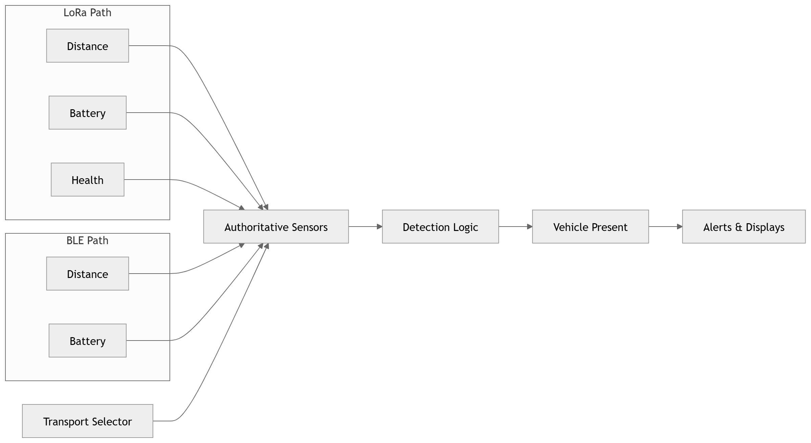

Privacy-first vehicle presence detection


Privacy-first vehicle presence detection
GateMate is a Home Assistant–based physical computing project for detecting vehicle presence at a gate. It combines distance sensing, modular automation logic, MQTT messaging, and external notification endpoints.
GateMate is a modular vehicle presence detection system developed using Home Assistant, MQTT, and low-power sensing hardware. The project began with a BLE-based architecture using a Shelly BLU Distance sensor and ESP32 Bluetooth proxy, then evolved to include a LoRa transport path to address range and reliability constraints identified during testing. Detection logic is separated from transport through an authoritative sensor abstraction, allowing the same processing and notification logic to operate across multiple communication methods. The system supports mobile alerts, external ntfy notifications, and physical display output via a Raspberry Pi Sense HAT.

High-level overview of sensing, transport, processing, and output layers.